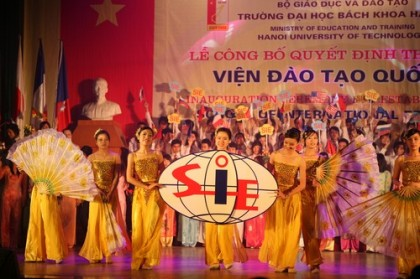

Văn phòng đào tạo quốc tế
viện đào tạo quốc tế sie
Viện Đào tạo Quốc tế – SIE, trường Đại học Bách Khoa Hà Nội được thành lập vào tháng 12 năm 2009, trên cơ sở phát triển những thành công của “Chương trình Hợp tác Đào tạo Quốc tế ITP” từ năm 2002.
Kiên định với mục tiêu chất lượng đào tạo chuẩn quốc tế, qua hơn 15 năm xây dựng và phát triển, Viện SIE đã trở thành cơ sở đào tạo hàng đầu của Việt Nam trong lĩnh vực liên kết đào tạo quốc tế bậc đại học và sau đại học. Viện SIE đã và đang triển khai các chương trình liên kết đào tạo bậc đại học và sau đại học với các trường đại học uy tính của CHLB Đức, Hoa Kỳ, LB Nga, Nhật Bản, Niu-Di-Lân, CH Pháp, Úc, Séc,… đào tạo các chuyên ngành Kỹ thuật Cơ điện tử, Công nghệ thông tin, Điện tử Viễn thông, Khoa học Máy tính, Quản trị kinh doanh,…
Các chương trình và khoá học do Viện tổ chức đáp ứng yêu cầu của nhiều tổ chức kiểm định quốc tế về chất lượng đào tạo. Đội ngũ giảng viên tham gia giảng dạy tại Viện SIE là các giảng viên của trường đại học đối tác nước ngoài, trường ĐHBK Hà Nội và giảng viên thỉnh giảng trong nước và quốc tế. Các giảng viên đều có trình độ chuyên môn cao, thông thạo ngoại ngữ và đáp ứng các yêu cầu của trường đối tác nước ngoài và của trường ĐHBK Hà Nội.
Với đội ngũ giảng viên trình độ cao, sự tận tâm và chuyên nghiệp của cán bộ ĐHBK Hà Nội và trường đối tác, với chương trình đào tạo được kiểm định chất lượng theo chuẩn quốc tế, hệ thống cơ sở vật chất hiện đại, thư viện phong phú, môi trường học tập năng động, sinh viên của Viện SIE được đào tạo một cách toàn diện về chuyên môn, ngoại ngữ, cũng như các kỹ năng làm việc khác, đảm bảo khi tốt nghiệp đáp ứng được yêu cầu cao của thị trường lao động trong nước và quốc tế.
Trong thời gian qua, đã có gần 4.000 sinh viên và học viên theo học tại Viện SIE, trong đó:
- Gần 300 sinh viên chuyển tiếp sang trường đối tác
- Gần 1.500 cử nhân, 300 thạc sỹ
Các sinh viên, học viên đã tốt nghiệp tại Viện SIE đang công tác tại nhiều lĩnh vực như các Bộ, Ban, Ngành của Chính phủ, các ngân hàng, tập đoàn trong và ngoài nước, một số tiếp tục theo học các bậc Thạc sỹ, Tiến sỹ tại các trường Đối tác
Thông tin liên hệ
- Địa chỉ: Phòng 201, nhà D7, Trường Đại học Bách Khoa Hà Nội, Số 01, Đại Cồ Việt – Tp Hà Nội
- Điện thoại: (024) – 3868.3407; Fax: (024) – 3868.3409
- Email: info@sie.edu.vn; Website: http://sie.hust.edu.vn